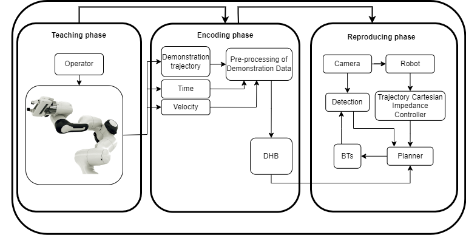

Test Scenarios and Results
Key scenarios tested during the project, demonstrating the system's capabilities and identifying areas for improvement:
- Clip Task: Successfully inserted and manipulated Ethernet cables in modular clips with high precision.
- NIST-Inspired Path: Attempted to follow a complete modular path, highlighting challenges in handling deformable objects and joint limits.
- Flexibility Tests: Reconfigured the board and tools to validate adaptability and optimize joint reachability.
Key observation: The system excelled in precise manipulation tasks but requires enhancements for handling more complex and dynamic scenarios.


